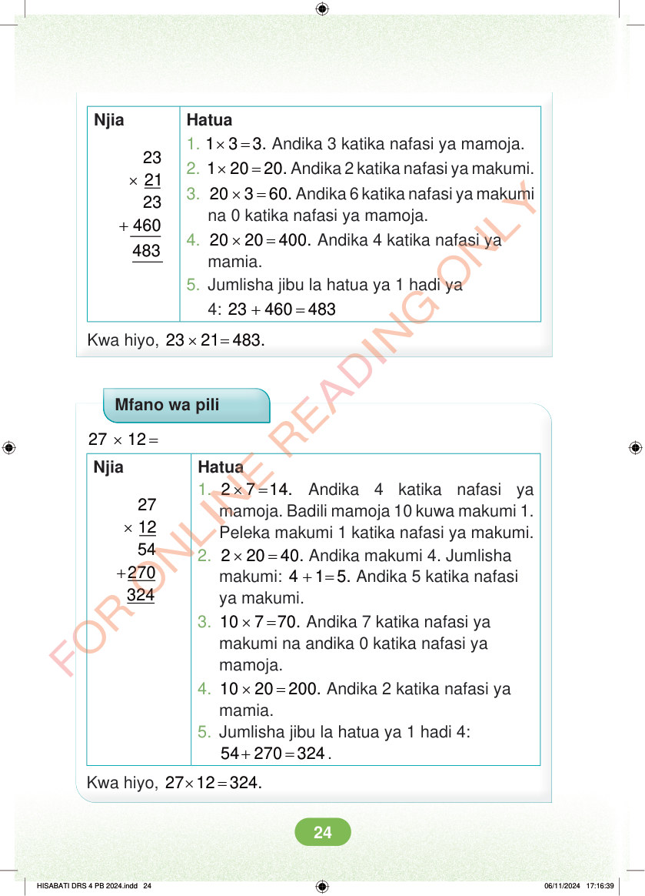

Njia × + 23 21 23 460 Hatua 1. × = 1 3 3. Andika 3 katika nafasi ya mamoja. 2. × = 1 20 20. Andika 2 katika nafasi ya makumi. 3. × = 20 3 60. Andika 6 katika nafasi ya makumi na 0 katika nafasi ya mamoja. 4. × = 20 20 400. Andika 4 katika nafasi ya mamia. 5. Jumlisha jibu la hatua ya 1 hadi ya 4: + = 23 460 483 Kwa hiyo, × = 23 21 483. Mfano wa pili × = 27 12 Njia × + 27 12 54 270 324 Hatua 1. × = 2 7 14. Andika 4 katika nafasi ya mamoja. Badili mamoja 10 kuwa makumi 1. Peleka makumi 1 katika nafasi ya makumi. 2. × = 2 20 40. Andika makumi 4. Jumlisha makumi: + = 4 1 5. Andika 5 katika nafasi ya makumi. 3. × = 10 7 70. Andika 7 katika nafasi ya makumi na andika 0 katika nafasi ya mamoja. 4. × = 10 20 200. Andika 2 katika nafasi ya mamia. 5. Jumlisha jibu la hatua ya 1 hadi 4: + = 54 270 324. Kwa hiyo, × = 27 12 324. HISABATI DRS 4 PB 2024.indd 24 HISABATI DRS 4 PB 2024.indd 24 06/11/2024 17:16:39 06/11/2024 17:16:39